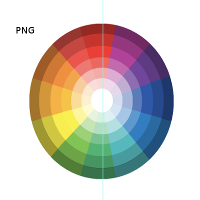
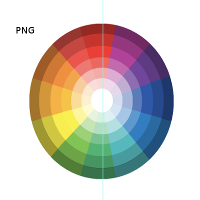

Prueba de markdown
Prueba de Markdown
Este ejemplo ilustra y testea las funcionalidades principales de un archivo markdown, para verificar que el rendering (en pydocs, jupyter notebook, nikola, etc.) funcione correctamente: código original.
Formato básico
El texto se escribe normalmente, y debería mostrarse sin consideraciones adicionales.
Es posible colocar un nuevo párrafo, con formateo de texto de italicas y negritas, y casos anidades: primer ejemplo de anidación y segundo ejemplo de anidación.
Listas
Listas enumeradas
Religiones ordenadas por número de seguidores:
- Islam
- Católica
- Hinduismo
- Budismo
O sea, la católica es segunda ;-).
Listas sin orden
Hay 10 tipos de personas:
- Las que saben binario.
- Las que no saben binario
- Las que no saben contar.
Modificadores de párrafos
Bloques de código
El código puede escribirse de varias formas:
# Código de bloque
Realizado por indentación.
para cada linea
# Código de bloque
Realizado por delimitadores
para cada linea
# Código de bloque para python Realizado por delimitadores. para cada linea
También podemos ver código en linea.
Citas
Any sufficiently advanced technology is indistinguishable from magic. (Arthur C. Clark).
Enlaces
A continuación, colocaremos el mismo enlace con distintos formatos:
- Versión simple, sólo dirección: https://sebastiandres.github.io/.
- Versión con texto: Link
- Versión con definición de link al final del documento: Link.
Images
Podemos insertar imágenes en variados formatos (gif, jpg, png, svg):

 

y sin olvidar un gif animado  .
.
Referencias
- https://www.markitdown.net/markdown: Ejemplo de Markdown usado como base para este archivo.